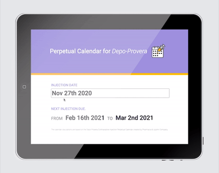
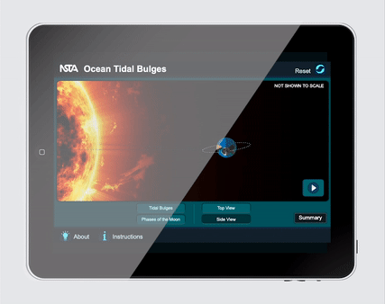
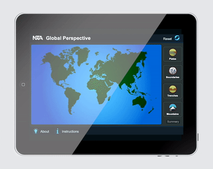

Hi there!
I design and manage products, illustrate, and dabble in frontend.
Depo-Provera Calculator has moved here.
Oh, and I love interaction design.
The Depo-Provera calendar calculator allows nurses to look up the date range of their patient's follow-up appointment.
The reset button allows the user to quickly reset the date in the search calendar to today's date, enabling users to look up multiple dates in one sitting without going back and forth through the calendar.
NSTA's Ocean Tidal Bulges interactive helps users visualize what ocean tidal bulges look like and connect their correlation to the Moon's position relative to Earth.
This exploratory interactive exaggerates proportions where tidal bulges occur on Earth, gives a view from the side or top of Earth, and toggles on/off the Moon's phases animation, all to better visualize tidal bulges' positions relative to the Moon.
NSTA's Global Perspective interactive helps users visualize where tectonic plate formations occur on Earth.
The user can explore and compare locations of different types of mountain belt locations on Earth.
